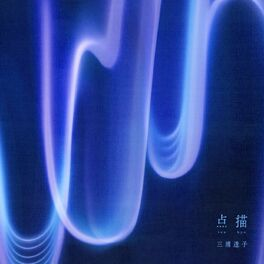

머리어깨무릎발(Feat.원슈타인)
이하이, 4 ONLY / 23.07.18
자신감이 넘치는 여자의 사랑이야기
'네 주위에 이만한 여자 봤어 I got what you need'
사진 위에 마우스 커서를 올려보세요! 2023년도 이전 기록은 반영되지 않음. (작성중)
머리어깨무릎발(Feat.원슈타인)이하이, 4 ONLY / 23.07.18자신감이 넘치는 여자의 사랑이야기 |

blur and flowerMiura Toko, 点描 / 23.07.14비 오는 날 들어야 할 노래 |

ライトダンスSakanaction, Shinshiro / 23.07.09믿고 듣는 sakanaction |
FOOLhitsujibungaku, FOOL내가 정말 좋아하는 슈게이징 밴드인 hitsujibungaku |